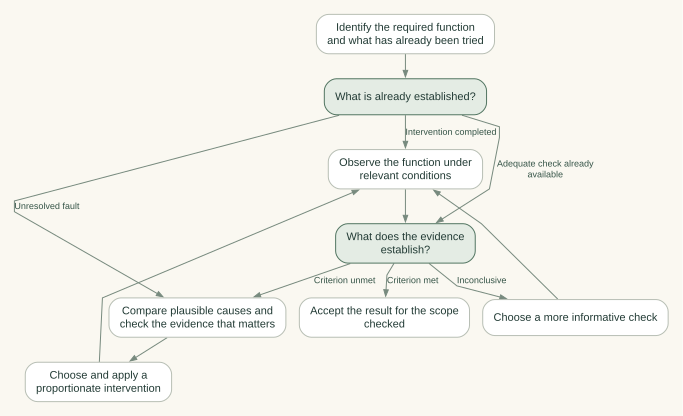

A clogged sink — knowing when you’re done
Your bathroom sink drains eventually, but water pools every time you wash your hands. Aura Pro asks what you can see. You lift out the stopper, clear the hair caught on it, and put it back. The standing water drains away. Has the fix worked? Aura Pro suggests repeating the thing that exposed the problem. You run the tap as you would to wash your hands. This time the drain keeps up. The person who uses the sink has the answer they need and closes the job. If it still pools at normal flow, the next question is what is restricting the drain after the stopper has been cleared. If it backs up next month, the earlier check shows how long the repair helped.
The question
Starting condition. A desired function is understood and the present state falls short. Central question. What action is likely to restore the function, and how will we recognize enough progress to stop?
Decision path


Output. A bounded judgment of completion, or a better-defined remaining problem. Verification can also be entered directly when someone has already acted.
Related system capabilities
Field observation and evidence
Acquire the observation that can settle a physical question.
Work coordination and execution
Carry an authorized choice into physical work and follow it through handoffs.
Verification and acceptance
Determine what a specific check establishes and who may accept the result.
Human and agent interfaces
Give each participant the information and actions appropriate to their role.